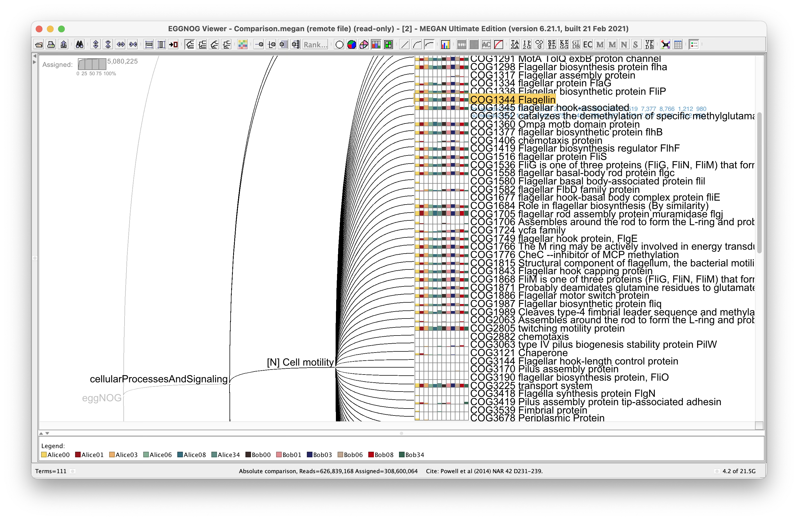
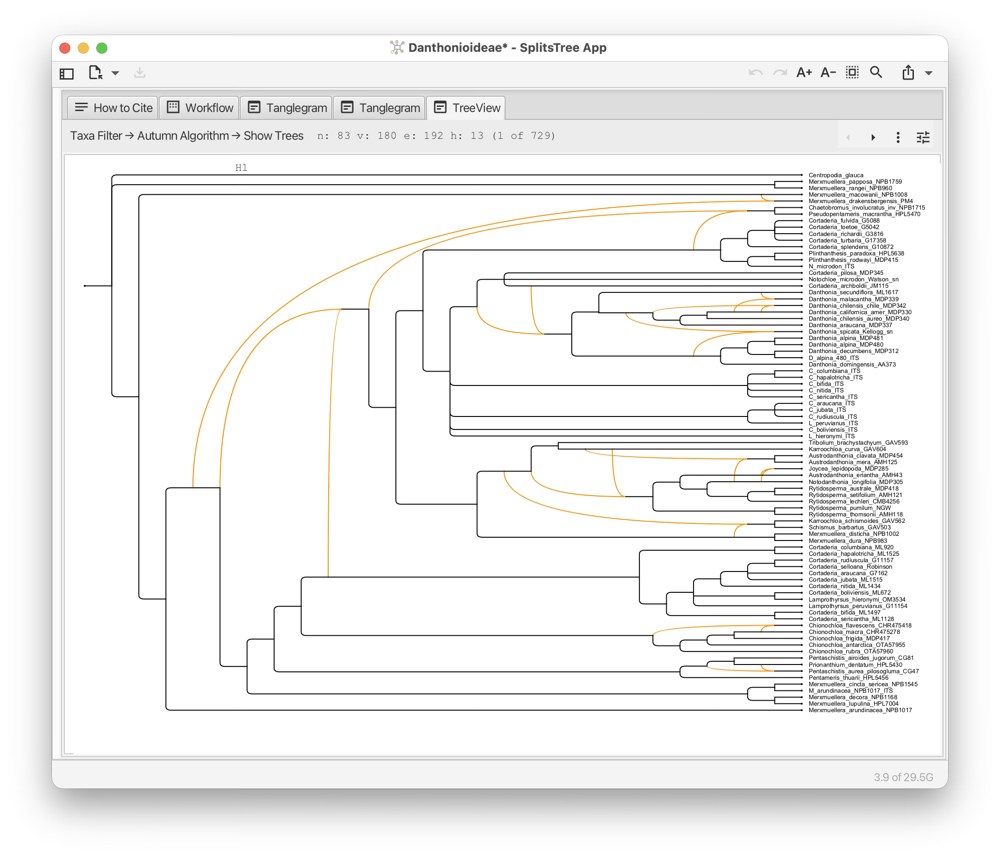
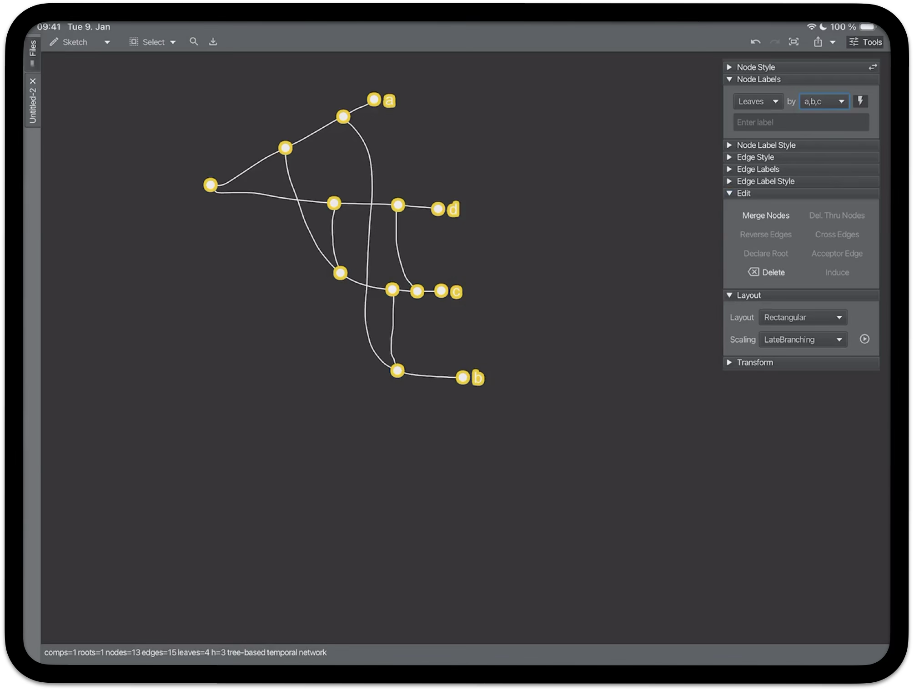
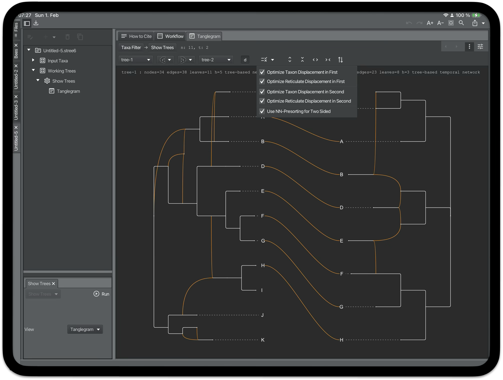

Software Systems
Development of interactive scientific software systems for bioinformatics, phylogenetics, metagenomics, and scientific visualization.
MEGAN

Interactive platform for the analysis and exploration of microbiome and metagenome sequencing data.
Features include taxonomic and functional analysis, comparison of datasets, long-read analysis, interactive visualization, and scalable data exploration.
SplitsTree

Interactive analysis and visualization of phylogenetic trees and networks.
Includes NeighborNet, consensus networks, rooted phylogenetic networks, tanglegrams, and touch-based iPad support.
PhyloSketchApp

Touch-based system for drawing, editing, and visualizing phylogenetic trees and networks.
Designed for iPad and desktop environments using modern JavaFX and mobile deployment workflows.
CatReNet

Visualization and analysis platform for catalytic reaction networks and autocatalytic systems.
Designed for interactive exploration of chemical and biological reaction systems.
Scientific Mobile Applications

Development of cross-platform scientific applications for desktop, iPad, and iPhone environments.
Includes deployment pipelines, App Store workflows, mobile scientific visualization, and touch-based interaction systems.